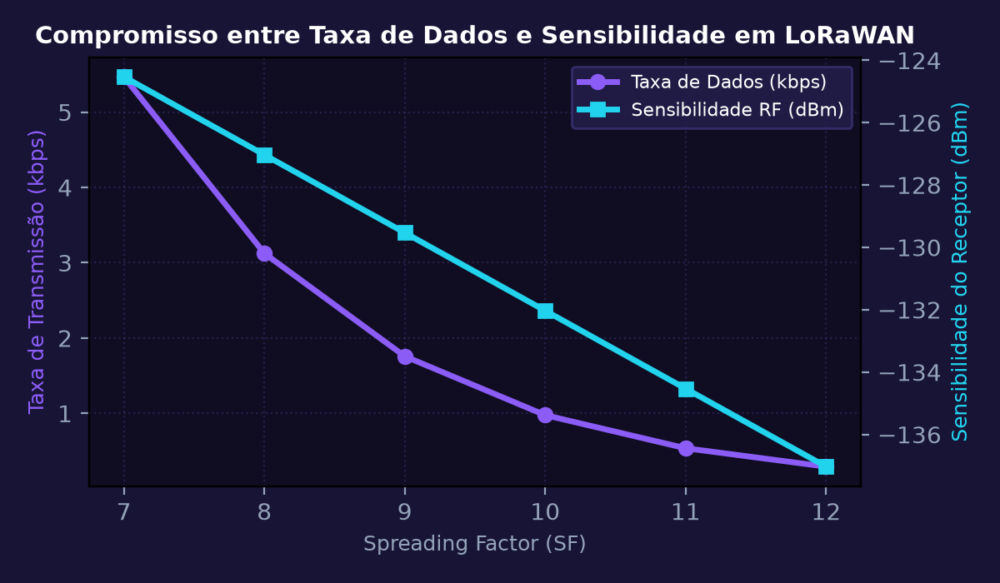
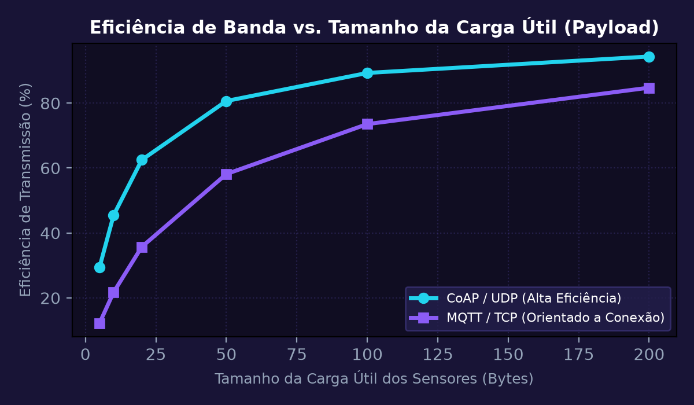
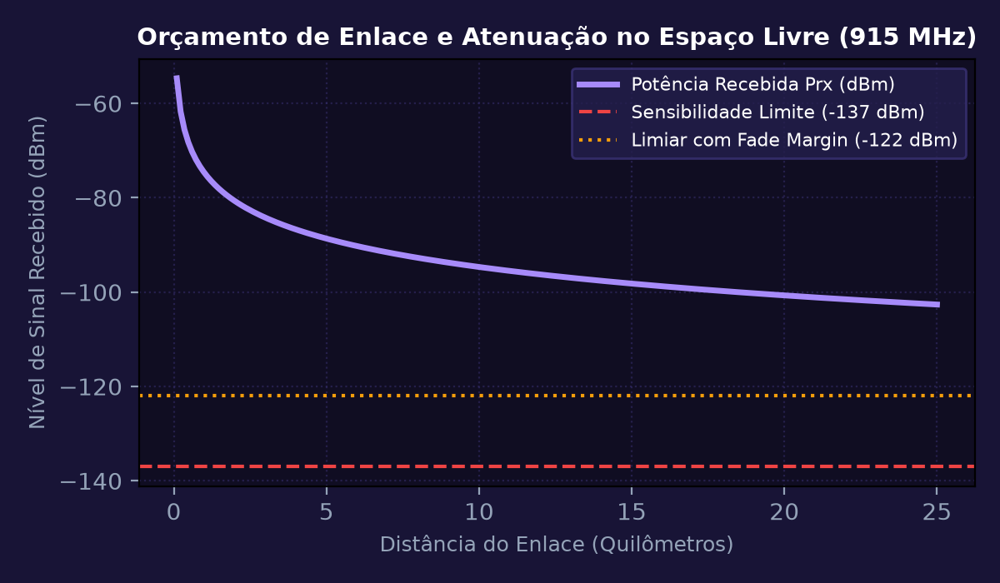
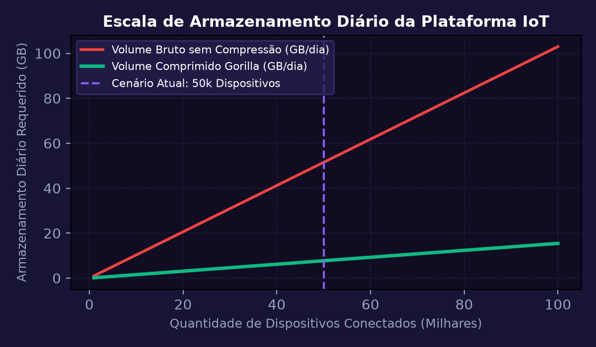
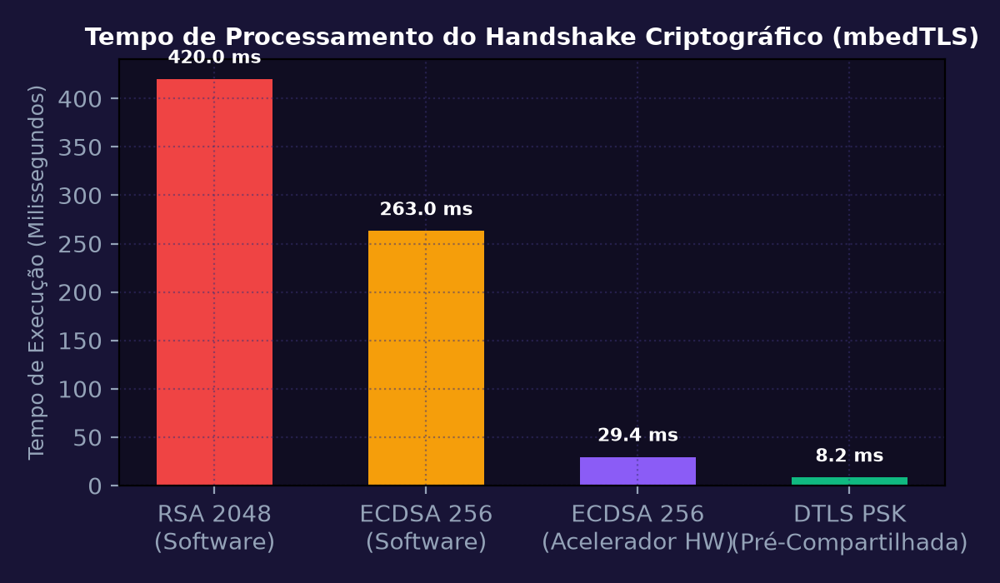
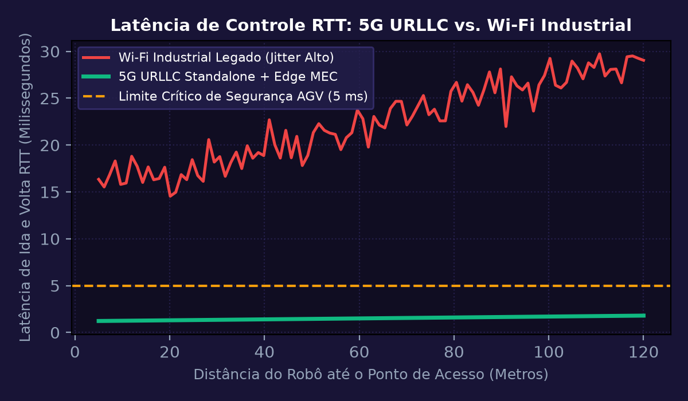

Arquiteturas de Telecomunicações e Tecnologias de Redes LPWAN
Comparar as características técnicas e operacionais das tecnologias de rede de longa distância e baixo consumo (LPWAN): LoRaWAN, NB-IoT e Sigfox. Analisar banda de frequência de operação (Sub-GHz ISM vs Celular Licenciado), modulação (CSS vs DSSS vs UNB), alcance em ambientes rurais/urbanos e capacidade de payload por mensagem.
💎 Resolução Algébrica Passo a Passo (Padrão Symbolab)
No Brasil, o LoRaWAN opera na banda ISM não licenciada de 915-928 MHz (AU915), o Sigfox em 920 MHz e o NB-IoT em bandas licenciadas de operadoras celulares (Band 28 em 700 MHz).
O fator de espalhamento (Spreading Factor - SF) varia de SF7 a SF12. Com maior SF, a taxa de dados diminui, mas a sensibilidade do receptor melhora drasticamente até -137 dBm.
Para BW = 125 kHz e Coding Rate CR = 4/5: Para SF7: R_b = 7 \times \frac{125000}{128} \times 0,8 \approx 5,47\text{ kbps}. Para SF12: R_b = 12 \times \frac{125000}{4096} \times 0,8 \approx 0,293\text{ kbps} (293 bps).
Sigfox limitado a 12 bytes e 140 mensagens/dia; LoRaWAN suporta payloads de até 242 bytes (SF7); NB-IoT suporta pacotes de até 1600 bytes com taxa de até 200 kbps.
Para sensores fabris e de agronegócio distribuídos sem infraestrutura celular, o LoRaWAN com gateway privado oferece o menor custo total de propriedade (TCO).

Protocolos Leves de Transporte de Mensagens: MQTT vs. CoAP
Implementar e comparar o desempenho de rede e overhead de cabeçalho entre os protocolos de aplicação IoT: MQTT (baseado em TCP e arquitetura Publish/Subscribe) e CoAP (Constrained Application Protocol, baseado em UDP e RESTful Request/Response). Analisar os níveis de garantia de entrega de serviço QoS 0, 1 e 2 no MQTT e mensagens Confirmable (CON) no CoAP.
💎 Resolução Algébrica Passo a Passo (Padrão Symbolab)
MQTT utiliza TCP garantindo confiabilidade por fluxo ordenado, exigindo handshake de 3 vias (SYN, SYN-ACK, ACK) e keep-alive periódico. CoAP utiliza UDP com cabeçalho ultra-compacto de apenas 4 bytes fixos.
Para um dado útil de 20 bytes: MQTT requer cabeçalho fixo (2B) + cabeçalho de tópico (ex: 14B) + TCP (20B) + IP (20B) = 56 bytes totais. CoAP requer cabeçalho CoAP (4B) + UDP (8B) + IP (20B) = 32 bytes totais.
Eficiência MQTT = \frac{20}{56} \approx 35,7\%. Eficiência CoAP = \frac{20}{32} \approx 62,5\%. O CoAP é 75% mais eficiente no uso de bytes transmitidos pelo rádio.
No MQTT: QoS 0 (no máximo uma vez), QoS 1 (pelo menos uma vez com PUBACK) e QoS 2 (exatamente uma vez com handshake de 4 mensagens). No CoAP: Mensagens Confirmable exigem ACK; Non-confirmable operam sem retorno.
MQTT é ideal para comunicação com brokers em nuvem e dispositivos permanentemente conectados à internet; CoAP é ideal para dispositivos ultra-restritos a bateria com sono profundo constante.

Propagação Eletromagnética, Antenas e Orçamento de Enlace (Link Budget)
Calcular o orçamento de enlace (Link Budget) e o alcance máximo de comunicação para um enlace de rádio LoRa na frequência de 915 MHz no espaço livre utilizando a Equação de Friis. O transmissor possui potência Pt = +14 dBm e ganho de antena Gt = +2 dBi; o receptor possui ganho Gr = +3 dBi e sensibilidade de recepção Pr_min = -137 dBm. Considerar margem de desvanecimento (Fade Margin) de 15 dB e perdas em conectores/cabos de 2 dB.
💎 Resolução Algébrica Passo a Passo (Padrão Symbolab)
Equação de balanço: \text{FSPL}_{max} = P_{tx} + G_{tx} + G_{rx} - P_{rx\_min} - L_{cabos} - \text{Margem}. Substituindo: \text{FSPL}_{max} = 14 + 2 + 3 - (-137) - 2 - 15 = 139\text{ dB}.
Para frequência f em MHz (915 MHz) e distância d em quilômetros: \text{FSPL} = 20\log_{10}(d) + 20\log_{10}(915) + 32,44 = 20\log_{10}(d) + 59,23 + 32,44 = 20\log_{10}(d) + 91,67\text{ dB}.
Temos 20\log_{10}(d) + 91,67 = 139 \implies 20\log_{10}(d) = 139 - 91,67 = 47,33\text{ dB}.
\log_{10}(d) = \frac{47,33}{20} \approx 2,3665 \implies d = 10^{2,3665} \approx 232,5\text{ km} em condições ideais de linha de visada (LOS puro em espaço livre).
Em relevo urbano e industrial com obstruções e desvanecimento por múltiplos percursos, o expoente de perda sobe de n=2 para n=3,5 a 4, resultando em alcance prático de 12 a 18 km.

Plataformas IoT em Nuvem, Ingestão Massiva e Séries Temporais
Dimensionar a arquitetura de ingestão de dados em nuvem para processamento de telemetria de 50.000 nós sensores transmitindo mensagens JSON de 128 bytes a cada 10 segundos. Dimensionar a capacidade do Message Broker (AWS IoT Core / Azure IoT Hub / EMQX), o particionamento do banco de séries temporais (InfluxDB / TimescaleDB) e a largura de banda de entrada requerida.
💎 Resolução Algébrica Passo a Passo (Padrão Symbolab)
Com 50.000 dispositivos enviando a cada 10 segundos: Taxa = \frac{50.000}{10} = 5.000\text{ mensagens por segundo} (MPS).
Tamanho do payload de 128 bytes: Throughput = 5.000 \times 128\text{ B/s} = 640.000\text{ B/s} = 640\text{ KB/s} (\approx 5,12\text{ Mbps}). Largura de banda moderada e facilmente sustentável.
Mensagens por dia: 5.000 \times 86.400 = 432.000.000\text{ mensagens/dia}. Volume bruto diário: 432\times 10^6 \times 128\text{ B} \approx 55,3\text{ GB/dia}.
Com bancos especializados em séries temporais (TimescaleDB / InfluxDB Gorilla Compression), a taxa de compressão típica de 85% reduz o volume armazenado para apenas 8,3 GB/dia.
Particionamento de tabelas em chunks temporais de 24 horas indexados por Device_ID e Timestamp, permitindo expurgo automático (Data Retention Policy) após 90 dias sem travar o motor SQL.

Criptografia e Segurança em Redes IoT: TLS 1.3 e DTLS em Hardware
Analisar o impacto computacional, overhead de memória RAM/Flash e tempo de conexão do aperto de mão (Handshake) criptográfico utilizando TLS 1.3 sobre TCP e DTLS 1.2 sobre UDP em um microcontrolador de 32 bits rodando mbedTLS com e sem suporte a acelerador criptográfico de hardware (Hardware Cryptographic Accelerator).
💎 Resolução Algébrica Passo a Passo (Padrão Symbolab)
O TLS 1.3 reduziu o handshake para 1-RTT (Round Trip Time), cortando pela metade o tempo de espera de rede em comparação aos 2-RTTs exigidos no TLS 1.2.
A geração de chaves efêmeras e cálculo do segredo compartilhado via ECDH Curve25519 ou secp256r1 consome milhões de ciclos de instrução do núcleo da CPU se implementada em software puro.
Emulação por software puro em 80 MHz: Cálculo da chave = 245 ms; hash SHA-256 = 18 ms. Com acelerador de hardware por DMA: Cálculo da chave = 28 ms; hash SHA-256 = 1,4 ms.
O Datagram Transport Layer Security (DTLS) adiciona número de sequência explícito e mecanismo de retransmissão interna para lidar com pacotes perdidos ou fora de ordem sem travar o canal.
O uso de acelerador criptográfico em hardware reduz a drenagem de energia em 88% durante o handshake, viabilizando conexões seguras de nível bancário em dispositivos alimentados a bateria.

Redes Móveis 5G, Arquitetura Standalone (SA) e Fatiamento de Rede
Dimensionar os parâmetros de uma rede privada 5G Standalone (5G SA) com computação de borda (Multi-Access Edge Computing - MEC) operando em onda milimétrica (FR2 a 28 GHz) para controle de veículos autônomos industriais (AGVs). Configurar o fatiamento de rede (Network Slicing) garantindo isolamento da fatia URLLC (Ultra-Reliable Low-Latency Communication) com confiabilidade 99,999% e latência máxima de 1 ms.
💎 Resolução Algébrica Passo a Passo (Padrão Symbolab)
O 5G divide o espectro em 3 pilares: eMBB (Banda Larga Móvel Aumentada), mMTC (Comunicações Massivas Tipo Máquina) e URLLC (Comunicações Ultra-Confiáveis de Baixa Latência). AGVs industriais demandam URLLC.
No LTE 4G, o subquadro padrão tem duração fixa de 1 ms. No 5G NR com espaçamento de subportadoras (SCS) expandido para 60 kHz ou 120 kHz, o slot dura apenas 0,25 ms ou 0,125 ms, permitindo mini-slots de altíssima velocidade.
Instalação do plano de controle do usuário (UPF - User Plane Function) e servidores de inferência na própria subestação fabril, eliminando a viagem de dados (Backhaul) até a nuvem pública e garantindo latência RTT < 3 ms.
MIMO Massivo e transmissão redundante de pacotes críticos em portadoras duplas garantem que a probabilidade de falha por pacote permaneça abaixo de 10^{-5}.
Eliminação completa de cabeamentos físicos e cabos umbilicais, permitindo reconfiguração dinâmica em minutos de rotas de frotas de 60 robôs industriais móveis.
